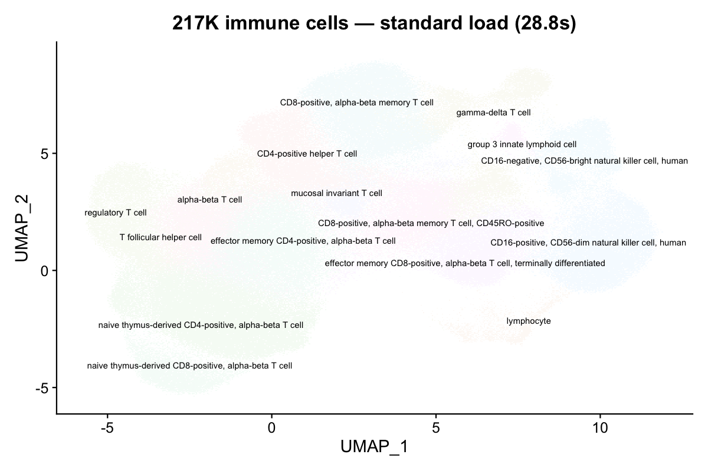
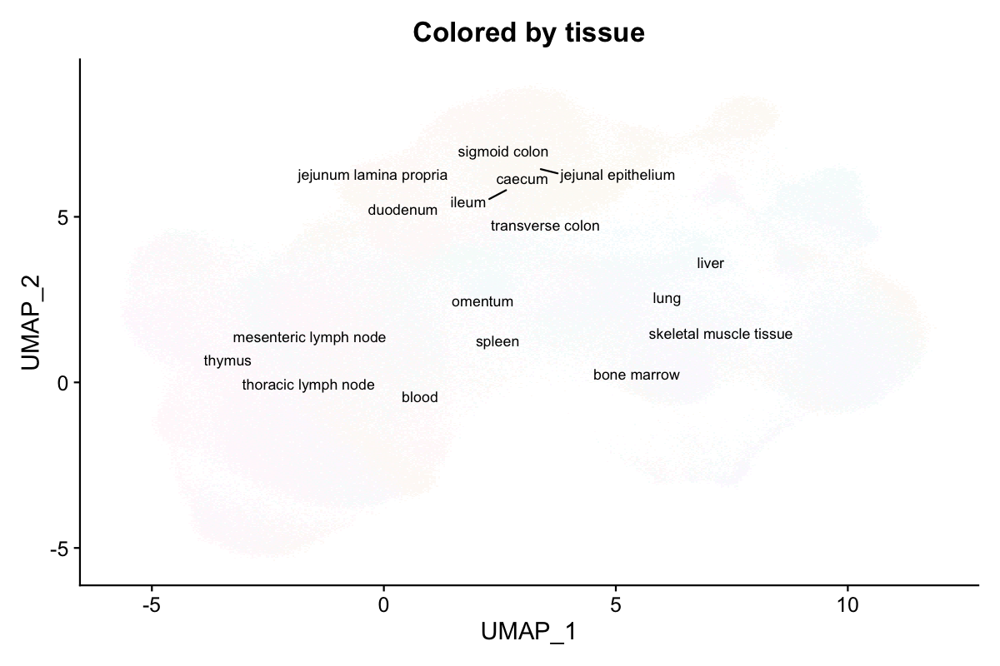
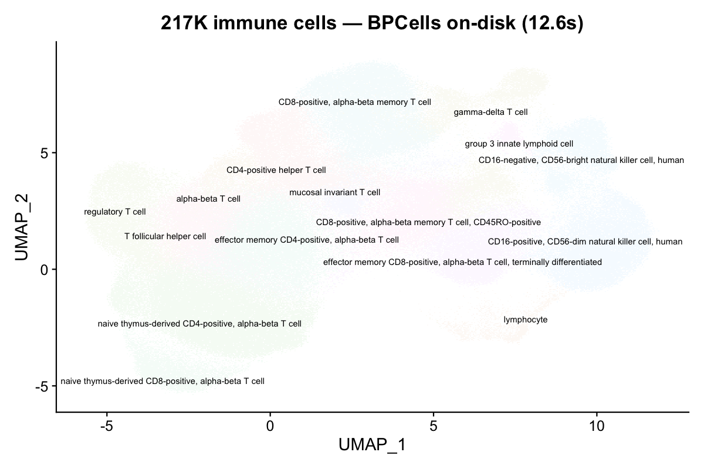
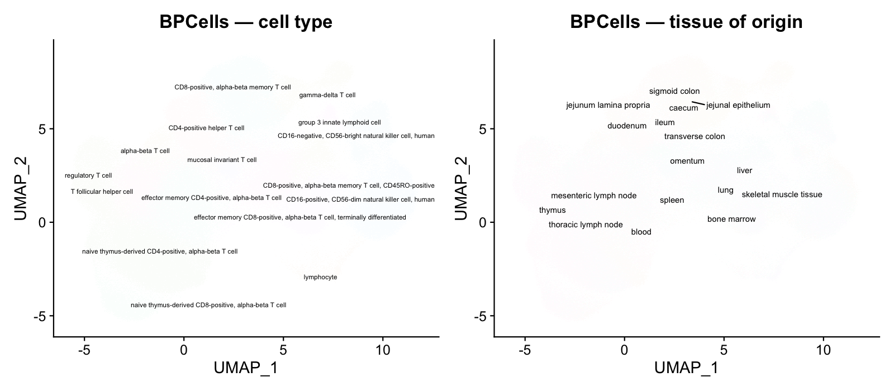
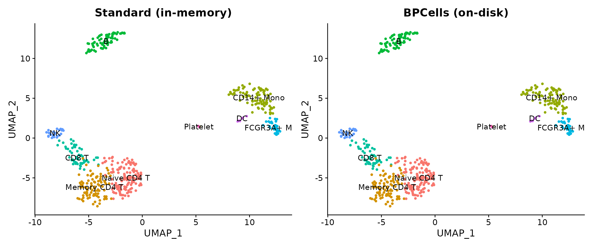

When datasets grow beyond 100K cells, in-memory loading can exhaust available RAM. scConvert integrates with BPCells to keep expression matrices on disk while still enabling full Seurat workflows. This vignette demonstrates loading a real atlas-scale dataset from CELLxGENE Discover with and without BPCells.
Download a CELLxGENE dataset
We use the Cross-tissue immune cell atlas (Domínguez Conde et al., Science 2022), T & innate lymphoid cell subset — 216,611 cells × 35,469 genes across 12 tissues (1.6 GB h5ad).
# Download T & innate lymphoid cells subset (~1.6 GB)
url <- "https://datasets.cellxgene.cziscience.com/6cd641fe-5ee8-47b4-92dc-26816e270d5e.h5ad"
atlas_path <- "immune_tcells.h5ad"
options(timeout = 600)
download.file(url, atlas_path, mode = "wb")Other candidates on CELLxGENE:
| Dataset | Cells | Size |
|---|---|---|
| Cross-tissue immune (Global) | 329K | 3.0 GB |
| Cross-tissue immune (T cells) | 217K | 1.6 GB |
| Cross-tissue immune (B cells) | 55K | 498 MB |
| ScaleBio Human PBMCs | 685K | ~5 GB |
Standard loading (in-memory)
Without BPCells, the full expression matrix is loaded into RAM as a sparse matrix. For 217K cells × 35K genes, this requires ~8.5 GB of RAM.
system.time(atlas <- readH5AD("immune_tcells.h5ad"))
#> Cells: 216611
#> Features: 35469
#> elapsed: 28.8 s
format(object.size(atlas), units = "GB")
#> "8.5 Gb"
DimPlot(atlas, group.by = "cell_type", label = TRUE, repel = TRUE,
label.size = 2.5, pt.size = 0.05) +
NoLegend() + ggtitle("217K immune cells — standard load (28.8s)")
16 distinct immune cell types are clearly resolved on the UMAP.
DimPlot(atlas, group.by = "tissue", label = TRUE, repel = TRUE,
label.size = 3, pt.size = 0.05) +
NoLegend() + ggtitle("Colored by tissue of origin")
Cells from 12 tissues (blood, spleen, bone marrow, thymus, lymph nodes, etc.) intermingle on the UMAP, confirming shared immune cell identities across tissues.
BPCells loading (on-disk)
With use.bpcells, the expression matrix stays on disk.
Only metadata, embeddings, and graphs are loaded into RAM.
Mode 1: HDF5-backed (zero copy)
Pass use.bpcells = TRUE to keep the matrix backed by the
original h5ad file. No data is copied.
system.time(atlas_bp <- readH5AD("immune_tcells.h5ad", use.bpcells = TRUE))
#> elapsed: 12.6 s (2.3x faster)
format(object.size(atlas_bp), units = "MB")
#> "169.2 Mb" (vs 8.5 GB — 98% reduction)
DimPlot(atlas_bp, group.by = "cell_type", label = TRUE, repel = TRUE,
label.size = 2.5, pt.size = 0.05) +
NoLegend() + ggtitle("217K cells — BPCells on-disk (12.6s)")
The UMAP is identical — BPCells changes storage, not values.
Mode 2: BPCells directory (cached on disk)
Pass a directory path to convert into BPCells’ optimized bitpacked format.
# First load writes the cache
system.time(atlas_bp2 <- readH5AD("immune_tcells.h5ad", use.bpcells = "bp_cache"))
#> elapsed: 13.5 s
# Subsequent loads reuse the cache
system.time(atlas_bp2 <- readH5AD("immune_tcells.h5ad", use.bpcells = "bp_cache"))
#> elapsed: 13.2 sBenchmark results
Measured on the 217K-cell cross-tissue immune atlas (35K genes, 1.6 GB h5ad). Apple M4 Max, 128 GB RAM.
| Mode | Load time | Object size | Memory reduction |
|---|---|---|---|
| Standard (in-memory) | 28.8 s | 8.5 GB | — |
BPCells HDF5 (TRUE) |
12.6 s | 169 MB | 98% |
| BPCells directory (path) | 13.5 s | 169 MB | 98% |
| CLI conversion (no R) | 55.5 s | — | 100% (no object) |
BPCells reduces memory by 98% because the expression matrix (which dominates object size at ~8.3 GB) is never materialized in R’s memory. Only metadata (~25 columns × 217K rows) and the UMAP embedding (217K × 2) are loaded.

Demo with shipped data
Verify BPCells mode works on your system with the small shipped demo.
has_bp <- requireNamespace("BPCells", quietly = TRUE)
h5ad_file <- system.file("extdata", "pbmc_demo.h5ad", package = "scConvert")
if (has_bp) {
bp_dir <- file.path(tempdir(), "bpcells_demo")
obj_bp <- readH5AD(h5ad_file, use.bpcells = bp_dir, verbose = FALSE)
obj_std <- readH5AD(h5ad_file, verbose = FALSE)
cat("Standard object size:", format(object.size(obj_std), units = "KB"), "\n")
cat("BPCells object size: ", format(object.size(obj_bp), units = "KB"), "\n")
cat("Matrix class (standard):", class(GetAssayData(obj_std, layer = "counts"))[1], "\n")
cat("Matrix class (BPCells): ", class(GetAssayData(obj_bp, layer = "counts"))[1], "\n")
unlink(bp_dir, recursive = TRUE)
} else {
cat("BPCells not installed. Install with:\n")
cat(' remotes::install_github("bnprks/BPCells/r")\n')
}
#> Warning: Matrix compression performs poorly with non-integers.
#> • Consider calling convert_matrix_type if a compressed integer matrix is intended.
#> This message is displayed once every 8 hours.
#> Standard object size: 3377.9 Kb
#> BPCells object size: 1362.7 Kb
#> Matrix class (standard): dgCMatrix
#> Matrix class (BPCells): RenameDims
if (has_bp) {
library(patchwork)
p1 <- DimPlot(obj_std, group.by = "seurat_annotations", label = TRUE, pt.size = 1) +
ggtitle("Standard (in-memory)") + NoLegend()
p2 <- DimPlot(obj_bp, group.by = "seurat_annotations", label = TRUE, pt.size = 1) +
ggtitle("BPCells (on-disk)") + NoLegend()
p1 + p2
}
Converting atlas-scale data
On-disk conversion (no loading needed)
For HDF5 format pairs, the C binary converts directly without loading into R:
# Convert the 217K-cell atlas without loading into R
scConvert_cli("immune_tcells.h5ad", "immune_tcells.h5seurat")
#> elapsed: 55.5 s (1.6 GB file)
# Or use the one-liner (auto-detects the fastest path)
scConvert("immune_tcells.h5ad", dest = "h5seurat")When to use BPCells
| Scenario | Recommendation |
|---|---|
| < 50K cells | Standard loading (fast, simple) |
| 50K – 500K cells | BPCells optional (saves RAM) |
| > 500K cells | BPCells strongly recommended |
| Repeated access to same file |
use.bpcells = "/path" (directory cache) |
| One-time format conversion | C binary (scConvert_cli) — no loading at all |
| Subsetting before analysis | BPCells + subset() + save |